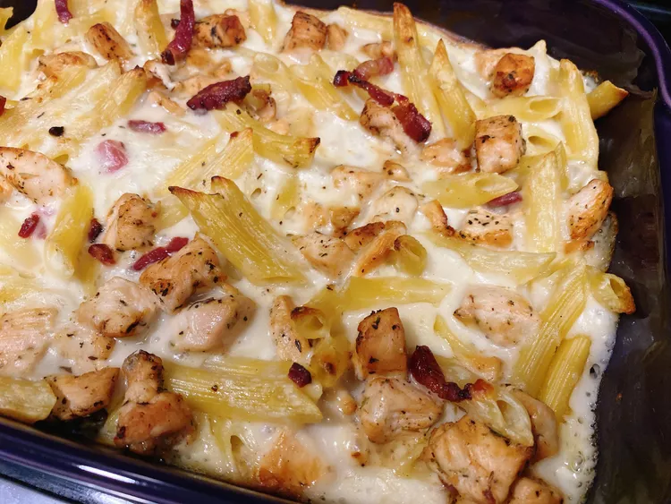

Chicken Pasta

Description
This dish is a mouthwatering combination of flavors that will tantalize your taste buds. It features a perfect balance of ingredients and is sure to impress your family and friends.
Ingredients
- 8 ounces penne pasta
- 3 ounces pork shoulder bacon, cut into strips
- 12 ounces chicken breast meat, cubed
- 1 teaspoon Italian seasoning
- 1/4 teaspoon freshly ground black pepper
- 3 tablespoons butter
- 1/4 cup all-purpose flour
- 2 cups milk
- 4 ounces shredded mozzarella cheese
- 2 ounces shredded Gruyere cheese
Steps
- Step 1:Fill a large pot with lightly salted water and bring to a rolling boil. Stir in penne and return to a boil. Cook pasta uncovered, stirring occasionally, until tender yet firm to the bite, about 10 minutes.
- Step 2:Meanwhile, cook bacon in a large skillet over medium-high heat, turning occasionally, until fat has rendered, 4 to 5 minutes. Remove bacon to a plate to cool.
- Step 3:Preheat the oven to 350 degrees F (175 degrees C).
- Step 4:Add chicken to the same skillet; stir in Italian seasoning and black pepper. Cook and stir until chicken is golden, about 5 minutes; remove from heat. Chop bacon and add to the skillet.
- Step 5:Melt butter In a large saucepan over medium heat. Whisk in flour until smooth and golden. Pour in milk, whisking constantly. Stir in mozzarella cheese and Gruyere cheese; cook until cheese is melted.
- Drain pasta. Pour cheese sauce over pasta; stir in chicken and bacon. Pour mixture into a casserole dish.
- Bake in the preheated oven, uncovered, until bubbly, about 30 minutes.